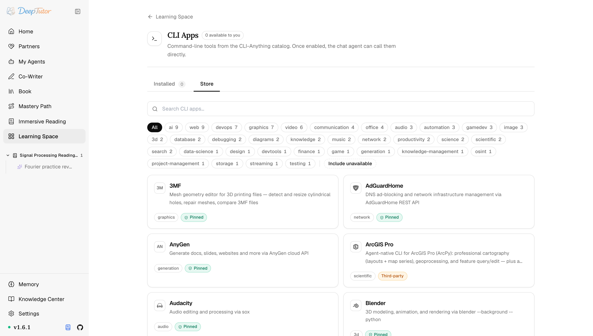

DeepTutor 生態CLI-App 擴充
DeepTutor 藏了 101 個命令列神器！智慧代理直接呼叫真實工具，全程沙箱隔離，附使用教學！｜零度解說
在每個部署中安裝一次經審查的命令列應用，再把每個獲准應用以沙箱工具形式提供給智慧代理。
原文連結：https://docs.deeptutor.info/zh-cn/ecosystem/cli-apps/
最近折騰 DeepTutor 的時候，我在生態板塊裡翻到了一個寶藏功能：CLI-App 擴充（命令列應用擴充）。
數字先擺出來：商店裡一共收錄了 101 個命令列工具，全部從 CLI-Anything 註冊表的兩個快照精選而來，覆蓋媒體、文件、地理空間與 3D 應用。
但是問題來了。讓智慧代理（Agent）去碰命令列，很多朋友第一反應就是慌：這不等於把整台主機的終端機權限直接交出去了嗎？
DeepTutor 的思路其實很克制：讓智慧代理呼叫真實的命令列程式，卻不授予通用主機的完整終端機權限。每個應用都安裝在獨立環境中，以只讀方式掛載到沙箱執行器，最後只暴露一個程式固定、引數由模型生成的工具。
接下來我們就把這個擴充從頭到尾梳理一遍，看看它是怎麼把"敢用"和"安全"同時做到的。
瀏覽目錄
入口在學習空間 → CLI Apps。
商店收錄了從兩個 CLI-Anything 註冊表快照下來的 101 個工具，涵蓋媒體、文件、地理空間與 3D 應用。

目錄隨軟體套件一起發布，所以離線也能瀏覽，部署對"當前可以安裝什麼"始終有穩定答案。
勾上 Include unavailable，還能看到安裝器依賴當前執行環境所沒有的套件管理器的那些條目。
每個條目都帶信任標籤，一共三檔：
| 信任標籤 | 含義 |
|---|---|
| Pinned | 來自本版本審查並鎖定的 CLI-Anything 修訂。 |
| Third-party | 其他上游，使用註冊表記錄的修訂。 |
| Third-party, unpinned | 其他上游，使用其預設分支當前最新內容。 |
簡單說，Pinned 最穩，Third-party, unpinned 最"活"，裝哪個自己權衡。
安裝僅限管理員
這裡劃個重點：安裝軟體套件這件事，只能管理員來。
原因不復雜。安裝過程會以應用使用者身份執行第三方建置程式碼，這種事絕不能開放給帳號自助操作。
DeepTutor 的處理也很講究：它會把註冊表中的安裝字串解析成計畫，而不是直接交給終端機執行；npm（Node.js 套件管理器）的 install 指令碼被禁用，更新失敗時則還原之前可用的環境。
還有一點值得單獨拎出來說：安裝與授權是兩個決定。
管理員可以先安裝應用，而不把執行權限自動授予所有帳號。給誰用，單獨開。
執行仍在沙箱內
每個已安裝應用會成為一個名為 cli_<app id> 的工具。
模型提供的是類似 ['scene', 'list'] 這樣的引數向量，可執行程式本身固定，因此下游不需要再用命令列去解析命令字串。
使用指南按漸進披露載入。初始清單只為每個應用提供一行說明，只有 load_tools 選中該應用後，完整指南才會送入模型。
多使用者部署裡，授權按 app id 設定 CLI App 白名單，非管理員帳號預設拒絕。
可以說，對於既想讓智慧代理真正動手做事、又不想裸奔開權限的朋友來說，這套設計還是非常香的。
最後照例提醒一句：部署過程遇到問題，歡迎在留言區留言，把報錯的完整日誌貼出來，我看到會回覆。